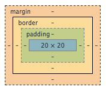
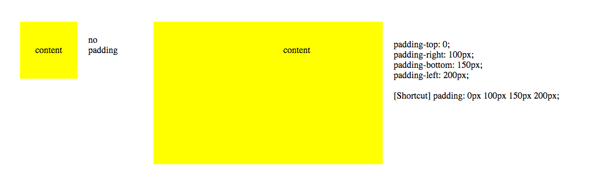
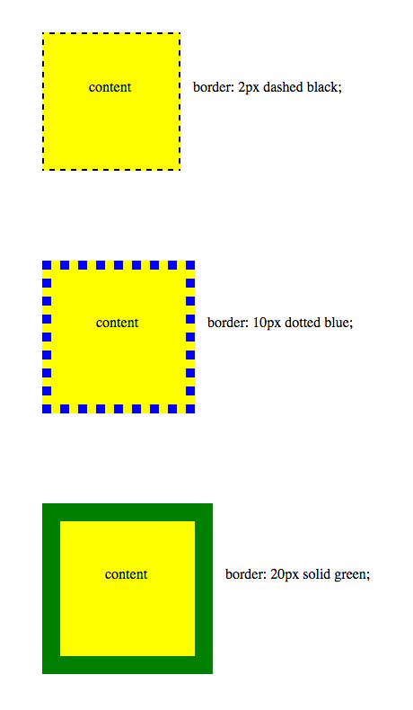

Padding, Border and Margin
December 30, 2014
In the context of design and layout, web developers use CSS properties: padding, border and margin to arrange HTML elements on their page. Padding, border and margin wraps around the content box, which typically contains image or texts. The following image illustrates the overall relationship between the mentioned CSS properties.
Padding: The primary purpose of padding is to define the space between the content box and the border. It is important to keep in mind that padding is transparent. The following image demonstrates the effects of having different padding.
Border: Following the padding is the border, which wraps around the padding and content box. Border can be customized by specifying the width, style and color. Common border styles include dotted, dashed, solid and double. Note the different borders below along with their syntaxes.
Margin: Margin clears an area around the element, outside of the border. Similar to padding, the margin is transparent. In the below image, Box 3 shows the result of having a different margin for all four sides. Box 3 has a top-margin of 25px, which causes Box 1 to be positioned 25px away from the top of Box 3. The same principle applies to the other three sides.